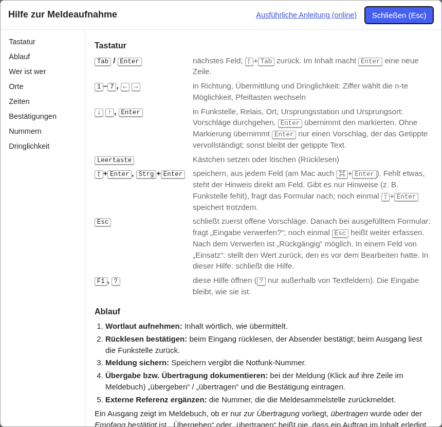

Tastatur und Hilfe
← Notfunk-Anleitung · Notfunk-Meldebuch öffnen
Tastatur
| Taste | Wirkung |
|---|---|
| Tab / Enter | nächstes Feld (im Inhalt: Enter = neue Zeile) |
| ⇧+Tab | vorheriges Feld |
| 1 – 7, ← → | Auswahl in Richtung, Übermittlung, Dringlichkeit |
| ↓ ↑, Enter | Vorschläge durchgehen und übernehmen (Funkstelle, Relais, Orte, Ursprung) |
| Leertaste | Kästchen setzen (Rücklesen) |
| ⇧+Enter, Strg+Enter | speichern |
| Esc | Vorschläge schließen, dann „Eingabe verwerfen?“; noch einmal = weiter erfassen |
| F1, ? | Hilfe (? nur außerhalb von Textfeldern); Esc schließt sie |
Hilfe im Werkzeug

„? Hilfe“ (ganz rechts in der Kopfzeile) oder F1 öffnet die Kurzhilfe über dem Formular. Ihre Eingabe bleibt, wie sie ist; nach dem Schließen ist der Cursor wieder im vorigen Feld.